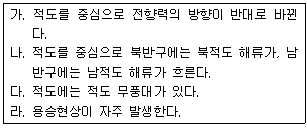
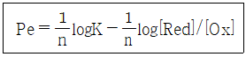
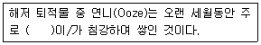

해양조사산업기사 (2017-05-07 기출문제)
1과목: 물리해양학
1. 유동(流動)의 결과로 생기는 부차적인 힘은?
- 중력
- 전향력
- 바람응력
- 압력경도력
(정답률: 75%)

2. 해수의염분을 변화시키는 요인이 될 수 없는 것은?
- 강우
- 증발
- 담수유입
- 용존산소
(정답률: 91%)
3. 해양의 수심이 10km인 곳의 수압은 대략 어느정도인가?
- 10기압
- 100기압
- 1000기압
- 10000기압
(정답률: 73%)
4. 서해 태안에서의 조화 분석 결과 반일주조의 반조차가 각각 M2=2.5m, S2=1.5m일 때 대조차는 몇 m인가?
- 5
- 6.5
- 8
- 10
(정답률: 76%)
5. 파랑의 각 진동수를 표현한 식은? (단, L:파장, T:주기, A:진동수)
- A = 2π/L
- A = L/2π
- A = 2π/T
- A = T/2π
(정답률: 84%)
6. 해면 단위 면적 당 파랑 에너지는?
- 주기의 제곱에 비례한다.
- 파고의 제곱에 비례한다.
- 파장의 제곱에 비례한다.
- 군속도의 제곱에 비례한다.
(정답률: 86%)
7. 북반구 해양에서 바람에 의해서 일어나는 표면해류의 운동 방향은?
- 풍향의 우측 45° 방향으로 일어남
- 풍향의 좌측 45° 방향으로 일어남
- 풍향의 우측 90° 방향으로 일어남
- 풍향의 좌측 90° 방향으로 일어남
(정답률: 86%)
8. 계절 수온 약층이 가장 잘 형성되는 시기는?
- 봄
- 여름
- 가을
- 겨울
(정답률: 90%)
9. 북반구에서 대양의 서측에 있는 남북방향 해안선에 평행한 바람(남풍)이 불고 있을 때 생기는 현상 중 틀린 것은?
- 용승
- 해면하강
- 표면수온상승
- 상층의 북향류 강화
(정답률: 56%)
10. 조류의 유속을 측정하였더니 유속이 5노트(Knots)이었다. 이 유속을 cm/sec로 환산하면 약 얼마인가?
- 약 100cm/sec
- 약 150cm/sec
- 약 200cm/sec
- 약 250cm/sec
(정답률: 64%)
11. 해양조사원 간행 연안 해도상에서 수심 20m인 지점과 해발 100m인 지점과의 고저차는?
- 100m이다.
- 120m이다.
- 120m보다 크다.
- 120m보다 작다.
(정답률: 86%)
12. 영구수온약층(Permanent Thermocline)에 대한설명 중 옳은 것은?
- 수직 안정도가 낮다.
- 주로 열대해역에서 볼 수 있다.
- 바람에 의한 혼합이 주 생성원인이다.
- 장소와 계절에 따라 그 깊이가 크게 변한다.
(정답률: 77%)
13. 바다가 청색으로 보이는 이유로 옳은 것은?
- 파장이 짧은 빛이 표면에서 반사ㆍ산란되고, 긴 것만 깊은 곳까지 투과되기 때문이다.
- 파장이 짧은 빛은 표면에서 흡수하고, 긴 것은 깊은 곳까지 투과되어 산란되기 때문이다.
- 파장이 긴 빛은 표면에서 흡수하고, 짧은 것은 깊은 곳까지 투과되어 산란되기 때문이다.
- 파장이 긴 빛이 표면에서 반사ㆍ산란되고, 짧은 것만 깊은 곳까지 투과되어 흡수되기 때문이다.
(정답률: 72%)
14. 다음 중 해수의 움직임에 영향이 가장 적은 것은?
- 마찰력
- 전향력
- 압력경사
- 표면장력
(정답률: 78%)
15. 오일러식으로 직접 해류관측을 할 수 있는 기기는?
- ADCP
- NOAA위성
- ARGOS부이
- TOPEX/Poseidon위성
(정답률: 87%)
16. 해양의 염분을 나타내는 단위로 천분율인 ‰을 사용하지 않고 PSU를 사용하는데 이는 어떠한 방법으로 구하는가?
- 염소량 적정
- 전기 전도도 측정
- 해수의 굴절률 측정
- 용존물질의 전량 직접 측정
(정답률: 91%)
17. 적도해역에 대한 일반적인 특징에 해당되는 것을 모두 고른 것은?

- 가, 나
- 나, 다
- 다, 라
- 가, 라
(정답률: 64%)
18. 해면의 경사와 등밀도면의 경사가 모든 수심에서 해수면과 평행일 경우 해류는 수심에 따라 어떻게 변화하는가? (단, 마찰이 없을 경우)
- 깊이에 따라 방향이 바뀐다.
- 깊어질수록 유속이 증가한다.
- 깊어질수록 유속이 감소한다.
- 깊이에 따른 유속의 변화가 없다.
(정답률: 70%)
19. 천해파의 위상속도와 군속도(Group Velocity)의 비교가 옳은 것은?
- 위상속도와 군속도는 같다.
- 위상속도는 항상 군속도보다 늦다.
- 위상속도는 항상 군속도보다 빠르다.
- 주기와 파장에 따라 위상속도는 군속도보다 빠를 수도 늦을 수도 있다.
(정답률: 79%)
20. 해양조사선에서 해저를 향해 음파를 발사한 후 2초 후에 반사되어 되돌아온 경우, 이 지점의 수심은 얼마인가? (단, 수중에서의 음속은 1,500m/s이다.)
- 750m
- 1500m
- 2500m
- 4000m
(정답률: 75%)
2과목: 화학해양학
21. 선박의 부착방지제로 사용된 유기주석화합물로 1980년대 이후 환경문제로 크게 주목받게 된 물질은?
- Dieldrin
- Tributyltin
- Chlorofluorocarbons
- Polychlorinated Biphenyl
(정답률: 83%)
22. 해양에서 심층수 생성 시 해수표면에서 포화 용존된 산소가 침강하였다고 가정할 때 포화 산소 농도에서 현재 측정된 산소농도를 뺀 값을 의미하지 않는 것은?
- AOU
- 포화 산소량
- 겉보기 산소 소비량
- 해수가 침강하면서 소비된 산소의 농도
(정답률: 77%)
23. 해수중의 나트륨과 칼륨에 관한 설명으로 옳은 것은?
- 50% 정도 이온쌍으로 존재한다.
- 90% 이상이 이온쌍으로 존재한다.
- 50% 정도 유리자유이온으로 존재한다.
- 90% 이상이 유리자유이온으로 존재한다.
(정답률: 78%)
24. 일반적인 산화환원 방정식을 다음과 같이 나타낼 때 Pe가 높은 환경이 의미하는 것은?

- 무산소 환경이다.
- 산화환원 평형 상태이다.
- 산화되려는 경향이 높은 환경이다.
- 환원되려는 경향이 높은 환경이다.
(정답률: 72%)
25. 해수의 자정능력에는 한계가 있어 연안 해수에 유기물이 너무 많으면 오염될 가능성이 크다. 다음중 오염지표 지수로 이용되는 것이 아닌 것은?
- 알칼리 금속
- 총유기탄소량
- DO(용존산소)
- COD(화학적산소요구량)
(정답률: 77%)
26. 해양생물의 제한 원소(Biolimiting Elements)가 되지 않는 것은?
- N
- P
- K
- Si
(정답률: 72%)
27. 해수 중 암모니아성 질소를 정량하는 방법과 각각의 장점을 연결한 것으로 옳은 것은?
- 네슬레법 - 감도가 좋다.
- 피리딘-피라졸론법 - 조작이 간편하다.
- 인도페놀발색법 - 감도가 좋고 분리가 용이하다.
- 아질산산화법 - 아질산염의 농도가 높은 시료의 경우도 오차가 적다.
(정답률: 80%)
28. 다음 중 해저 화산 열수공에서 제거되는 성분은?
- K, Fe
- Na, H2S
- Mg, Cl-
- MG, SO42-
(정답률: 71%)
29. 해수중의 염소량은 해수 1kg에 포함되어 있는 어떤 물질의 총량으로 정의되는가?
- 산화물
- 유기물
- 나트륨 원소
- 할로겐 원소
(정답률: 71%)
30. 해수의 용존 염류 중 가장 많은 것은?
- 염화물
- 인산염
- 탄산염
- 황화물
(정답률: 85%)
31. 전형적인 외양역에서 용존산소의 농도가 최소값을 보이는 수심은?
- 수심 100m 부근
- 수심 1000m 부근
- 수심 3000m 부근
- 수심 5000m 부근
(정답률: 81%)
32. 방사성 동위원소를 사용한 해양퇴적물의 퇴적속도 결정 방법 중에서 비교적 반감기가 짧아서 연안 퇴적물의 퇴적속도 결정에 주로 이용되는 동위원소는?
- 210Pb
- 230Th
- 231Pa
- 40K
(정답률: 70%)
33. 다음 중 해양에서 방사성원소(14C, 3H 등)를 이용하여 측정하지 않는 것은?
- 조석의 측정
- 수괴의 유동추적
- 해수의 나이 측정
- 해수의 교환율 측정
(정답률: 88%)
34. 해수의 일반적인 pH 범위(7.5~8.4)에서 용존총탄소(Total CO2, ΣCO2)의 99% 이상을 차지하는 화학종들은?
- CO2와 CO32-
- CO2와 HCO3-
- HCO3-와 CO32-
- HCO3-와 H2CO3
(정답률: 67%)
35. 해양에서 존재하는 기체 중 반응성이 낮아 기체교환 속도의 추적자로 주로 이용되는 것은?
- 메탄
- 라돈
- 아르곤
- 이산화탄소
(정답률: 72%)
36. 오염물질의 정량측정법 중 부피분석법의 종류가 아닌 것은?
- 중화적정법
- 흡광광도법
- 산화환원적정법
- 킬레이트적정법
(정답률: 74%)
37. Alexandrium, Gymnodinium 속 등이 주로 일으키는 패독은?
- DSP
- PAH
- PSP
- PCB
(정답률: 64%)
38. 해수 중 주 양이온들은 NA+, K+, Mg2+와 Ca2+으로 이들의 총 전하 몰농도는 606mM 이며, 주 음이온들은 Cl-, SO42-, Br-으로 이들의 총 전하 몰농도는 604mM 이다. 이 때 전기적 중성을 지니기 위해서 부족한 음이온 2mM을 채워주는 주 음이온은 무엇인가?
- [CO32-]와 [HPO42-]
- [HCO3-]와 [CO32-]
- [HCO3-]와 [HPO42-]
- [HPO42-]와 [PO42-]
(정답률: 70%)
39. 해양 식물플랑크톤의 유기화와 무기화 과정은 RedField비를 이용하여 생물활동을 화학양론적으로 나타낼 수 있다. 유기물의 분해과정에서 생성되는 이산화탄소와 사용되는 산소의 몰비를 사용하여 호흡률(RQ)을 계산하면 얼마인가?
- 0.37
- 0.58
- 0.77
- 0.98
(정답률: 91%)
40. 증발이나 담수 유입이 해수중의 주요 이온의 상대농도에 영향을 미치지 않는다고 한다면, S = 35‰ 일 때, 해수의 Na+가 468 meg/kg이면 S=32‰일 때 Na+ 농도는?
- 428 meq/kg
- 468 meq/kg
- 512 meq/kg
- 320 meq/kg
(정답률: 71%)
3과목: 생물해양학
41. 일반적으로 해양의 1차 생산을 담당하는 해양생물은?
- 섬모충류
- 해조류 및 식물플랑크톤
- 동물플랑크톤
- 어류
(정답률: 95%)
42. 해양생물을 채집하기 위해 사용되는 기구가 아닌 것은?
- 반돈 채수기(Van Don Water Sampler)
- 그랩 채니기(Grab Sampler)
- 봉고 네트(Bongo Net)
- CTD
(정답률: 84%)
43. 산소와 해양생물과의 관계를 설명한 사항으로 틀린 것은?
- 육상생물과 마찬가지로 거의 모든 해양생물은 산소의 공급이 절대적으로 필요하다.
- 식물성 플랑크톤은 광합성을 통해 산소를 발생시키므로 산소가 필요없다.
- 해양생물 가운데 어떤 것은 단지 휴면상태에 들어감으로써 얼마동안 산소 없이도 견딜 수 있다.
- 해양 박테리아의 일부는 산소 없이 생활한다.
(정답률: 95%)
44. 뱀장어가 바다에서 산란하고 성장을 하기 위해 강으로 회유를 하는 현상은?
- 소하성 회유
- 강하성 회유
- 양측성 회유
- 섭이 회유
(정답률: 82%)
45. 식물성 부유생물 중 Skeletonema Constatum이 증가한 해수의 주간(낮 동안) 특징이 아닌 것은?
- 인산염의 감소
- 규산염의 증가
- 용존산소의 증가
- 수소이온 농도의 감소
(정답률: 45%)
46. 다음 중 적조의 발생 가능성이 가장 낮은 곳은?
- 외해의 용승해역
- 폐쇄성 내만해역
- 부영양염이 풍부한 해역
- 일조량이 충분한 안정된 수괴
(정답률: 68%)
47. 다음 생물 중 사후 침전하여 저층의 침전물을 구성하는 것은?
- 녹조류
- 요각류
- 갑각류
- 유공충
(정답률: 70%)
48. 두족류 중 팔완류에 속하지 않는 것은?
- 문어
- 낙지
- 주꾸미
- 갑오징어
(정답률: 85%)
49. 지구와 달의 상관성 있는 움직임에 의해 바닷물이 밀려왔다가 빠져나가는 현상은?
- 압력
- 파랑
- 조석
- 해류
(정답률: 87%)
50. 몸에 다량의 석회질을 가진 해조는?
- 서실
- 꼬시래기
- 작은구슬산호말
- 국수나물
(정답률: 87%)
51. 점심해성 어류의 특징으로 가장 거리가 먼 것은?
- 발광기관을 가진다.
- 턱이 비교적 짧다.
- 체색이 어둡거나 투명하다.
- 퇴화된 눈을 가지고 있다.
(정답률: 94%)
52. 해양생물 군집을 구성하는 수많은 종들 중 몇몇 종들은 자신들의 존재 유무에 따라 군집의 구조와 기능의 변화가 초래될 수 있는데 이러한 군집구조에 결정적인 영향을 미치는 종은?
- 유사종
- 외래종
- 근연종
- 핵심종
(정답률: 95%)
53. 어류의 크기를 나타내는 방법 중 표준체장은?
- 몸 앞끝에서 꼬리지느러미 뒤끝까지의 직선거리
- 주둥치 앞끝에서 꼬리지느러미 기저까지의 직선거리
- 주둥치 앞끝에서 꼬리지느러미의 오목한 안끝까지의 직선거리
- 주둥치 앞끝에서 등지느러미의 끝까지의 직선거리
(정답률: 93%)
54. 극해역의 식물성 플랑크톤의 계절적 대번식기는?
- 봄
- 여름
- 가을
- 겨울
(정답률: 92%)
55. 뱀장어의 계군을 구분하는데 많이 사용되는 형질은?
- 비늘
- 이석
- 척추골수
- 체장
(정답률: 73%)
56. 자포동물의 특징이 아닌 것은?
- 방사상칭
- 3배엽성
- 자세포
- 폴립형
(정답률: 90%)
57. 다음 보기의 어류 중 난태생어류에 속하는 것은?
- 망상어
- 농어
- 넙치
- 대구
(정답률: 75%)
58. 1년 중 식물플랑크톤의 대량생산이 2회 일어나며 1차 대량생산이 2차 대량생산보다 뚜렷하게 큰 수역은?
- 한대
- 온대
- 열대
- 극지방
(정답률: 85%)
59. 다음 중 양식조개류의 대표적인 해적 생물은?
- 불가사리
- 물총새
- 성게
- 어류
(정답률: 91%)
60. 다음 해조류 중 무성생식법이 다른 종류와 다른 것은?
- 도박
- 김
- 꼬시래기
- 돌가사리
(정답률: 77%)
4과목: 지질해양학
61. 대륙사면과 해안과의 관계에 있어서 일반적으로 경사도가 급한 대륙사면은?
- 단층 해안 앞바다의 대륙사면
- 유년기 산맥해안 앞바다의 대륙사면
- 큰 강이 없고 안정된 해안 앞바다의 대륙사면
- 삼각주와 큰 강이 있는 해안 앞바다의 대륙사면
(정답률: 74%)
62. 다음 ( )안에 알맞은 용어는?

- 어류의 뼈
- 해저화산의 재
- 심해생물의 사체
- 동식물플랑크톤의 껍질
(정답률: 88%)
63. 암석에서 청어뼈형 사층리(Herring Cross Bedding)가 발견되었다면 다음 중 그 암석이 생성된 환경으로 가능성이 가장 큰 것은?
- 호수
- 대양저
- 조간대
- 대륙사면
(정답률: 62%)
64. 다음 퇴적물 중 석회질로 구성되어 있는 퇴적물은?
- 규질 연니
- 유공충 연니
- 방산충 연니
- 해면골침 퇴적물
(정답률: 80%)
65. 다음 중 석유가 가장 많이 산출되는 해저지형은?
- 대륙대
- 대륙붕
- 심해저
- 대륙사면
(정답률: 80%)
66. 탄성파 탐사에 대한 설명 중 틀린 것은?
- 석유탐사는 주로 반사법을 이용한다.
- 굴절법과 반사법 모두 수중청음기를 통해 탄성파를 수신한다.
- 반사법은 탄성파가 임계굴절이 일어날 수 있는 곳에서만 실시한다.
- 반사법 자료를 정확하게 해석하기 위해서는 전파 경로상의 모든 점의 속도정보가 필요하다.
(정답률: 80%)
67. 심해퇴적물 중 원양성 점토의 퇴적속도는 1000년에 약 몇 mm인가?
- 2~3mm
- 20~30mm
- 50~70mm
- 70~100mm
(정답률: 68%)
68. 삼각주에 관한 다음 설명 중 틀린 것은?
- 상부층은 항상 수면위에 노출되어 있다.
- 삼각주는 강의 퇴적물 운반량이 대단히 클 때 형성이 가능하다.
- 강이 바다와 접하면서 강의 유속이 감소됨으로써 하천퇴적물이 막대하게 퇴적한다.
- 삼각주 퇴적층은 상부층, 중간층, 하부층에 따라 퇴적물입도, 퇴적환경, 퇴적구조 등이 현저히 다르다.
(정답률: 88%)
69. 대륙붕단(Shelf Break)의 평균 수심은 얼마인가?
- 80m
- 140m
- 180m
- 200m
(정답률: 78%)
70. 직경이 약 0.8mm인 입자는 Wentworth Scale에 의하면 어느 등급에 해당되는가?
- 실트(Silt)
- 점토(Clay)
- 모래(Sand)
- 자갈(Granule)
(정답률: 67%)
71. 다음 중 해저 암석노출 지역에서 암석시료를 채취하는데 가장 적합한 채취방법은?
- 드렛지 (Dredge Sampler)
- 상자형 시추기 (Box Corer)
- 피스톤 시추기 (Piston Corer)
- 니스킨 채수기 (Niskin Bottle)
(정답률: 68%)
72. 내만(內灣)에 존재하는 특징적인 퇴적물로서 입자가 가장 작은 것은?
- 니질
- 사질
- 역질
- 사력질
(정답률: 83%)
73. 가장 최근에 일어난 빙하기 동안에 해수면의 변화는 대략 얼마 정도 되는가?
- 10m
- 50m
- 100m
- 125m
(정답률: 56%)
74. 음파를 이용하여 해저면의 영상정보를 취득할 수 있는 장비는?
- 부머 (Boomer)
- 에어건 (Air Gun)
- 기포펄스 (Bubble Pulser)
- 측면주사음향탐사기 (Side Scan Sonar)
(정답률: 90%)
75. 해양에 분포하는 육성기원 퇴적물 중 부유상태로 파도나 해류에 의해 가장 먼 곳까지 운반되는 것은?
- 모래
- 실트
- 점토
- 잔자갈
(정답률: 73%)
76. 기요(Guyot)에 대한 설명이 옳은 것은?
- 기요는 해산과 비슷하나 꼭대기가 평평하다.
- 기요란 대륙붕에서만 발견되는 해저지형의 특징이다.
- 기요는 해산의 꼭대기가 평평한데 비해 뾰족한 꼭대기를 가지고 있다.
- 기요는 모든 해저에 많이 발견되지만 특히 인도양 해저에서 많이 발견된다.
(정답률: 82%)
77. 육상기원 쇄설성 해양 퇴적물의 근원을 가장 잘 반영시켜 주는 것은?
- 광물 성분
- 미고생물 조성
- 유기물의 함량
- 퇴적물의 구조
(정답률: 79%)
78. 지구의 구성 중 암권 및 내권은 뚜렷한 3가지의 구조를 나타낸다. 이들 3가지 구조에 속하지 않는 것은?
- 핵(Core)
- 지각(Crust)
- 맨틀(Mantle)
- 열권(Thermosphere)
(정답률: 93%)
79. 육지의 한정된 자원으로 고갈이 예상되는 사력자원(모래, 자갈)은 해저의 어느 지역에 가장 많이 분포하고 있는가?
- 대륙대
- 대륙붕
- 심해저
- 대륙사면
(정답률: 72%)
80. 변환단층(Transform Fault)에 관한 설명으로 옳은 것은?
- 정단층의 일종이다.
- 역단층의 일종이다.
- 성장단층의 일종이다.
- 대양저 산맥에서 볼 수 있는 단층이다.
(정답률: 69%)